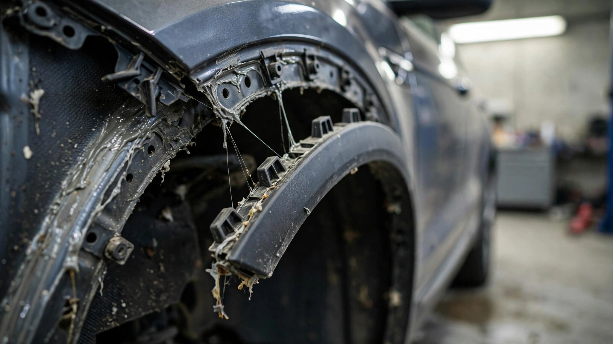

Your Car Is Held Together With Glue. In 2026, the Glue Started Losing.

Somewhere on I-95, a chunk of Ford Mustang Mach-E rear quarter window trim is tumbling across three lanes of traffic. Ford knows about it: they have 219 reports of that exact trim piece separating from the vehicle at speed.[1] Eighteen months elapsed between the first field reports and the recall notice. Root cause: a supplier swapped assembly jigs in February 2023 and didn't give the primer enough time to cure. Thirty seconds. That was the gap between a bonded panel and a highway projectile.
The Mach-E trim recall covers 86,543 crossovers from 2023 through 2025 model years.[1] But it isn't alone. Ford also recalled 108,000 Escapes for rear hinge covers that were never fully seated during assembly, held in place by DUAL LOCK adhesive strips instead of screws.[2] Then came 36,000 Broncos with fender flares that sag and detach on the highway, retained by push pins.[3] Subaru pulled 69,700 Foresters because the adhesive bonding their moonroof glass panels was deteriorating, and at least three panels had already come off in the field.[4] Honda recalled 3,933 Pilots and Passports when a new assembly pallet left rear subframe bolts insufficiently torqued.[5] Hyundai found the same problem in the Ioniq 5 and Ioniq 9 rear suspensions.[6]
Add the populations together and you get north of 300,000 vehicles recalled in 2026 for a single failure category that NHTSA doesn't officially track: stuff falling off your car while you drive it.
On paper, the manufacturing logic is straightforward and hard to argue with. Adhesive bonds distribute stress more evenly than point fasteners, weigh less, eliminate the drilling that weakens substrates, and allow tighter panel gaps. Boeing bonds composite fuselage sections with structural adhesives that hold at 500 knots, so the science is settled. None of that matters when a supplier in Flat Rock, Michigan, can't consistently give a primer coat thirty seconds to dry before slapping on trim at a rate of one vehicle every fifty-four seconds on a line that runs twenty hours a day.
That's what happened with the Mach-E, and Ford's Part 573 report spells it out: a new jig was introduced to speed assembly, and the jig worked beautifully except that the primer didn't care that it worked. Adhesive requires cure time, and the new process eliminated enough of it to compromise the bond across two and a half model years of production. Its supplier added a timer in September 2024 that prevents installation until 30 seconds of cure have elapsed.[1] A timer. A countdown clock that a shift manager could have duct-taped to the jig solved an industrial adhesive failure affecting 86,543 vehicles.
Ford's Escape tells a parallel story with different adhesive. DUAL LOCK is 3M's reclosable fastener system, essentially industrial-grade Velcro. It works brilliantly when properly seated, but "properly seated" requires engagement force applied during assembly that Ford's own Part 573 report acknowledges some units did not receive.[2] The 2025 models had a separate supplier issue where covers were installed over-flush, forcing them into contact with the liftgate and working loose with every open-close cycle. Two different failure modes sharing the same root cause: a fastening system that works in controlled conditions and fails when production tempo or tooling variance enters the picture.
Subaru's Forester moonroof failure is the most visually alarming. A glass panel separating from a vehicle at highway speed is not a trim piece that might scratch someone's hood. It's a sheet of tempered glass that will shatter on impact with whatever is behind it. Three confirmed detachments were enough to prompt the recall. Adhesive degradation over time drives the failure mechanism, which means the population of 69,700 vehicles is a clock, not a snapshot, with every panel approaching a failure threshold that depends on UV exposure, temperature cycling, and whatever the car washes of suburban America do to structural silicone over eighteen months.[4]
The Honda and Hyundai recalls are different in mechanism but identical in cause. Both stem from assembly process changes that reduced torque below specification. Honda introduced a new pallet for rear subframe installation and got 3,933 vehicles out the door before sampling caught it.[5] In both cases the fix was to revert to the old tooling and tighten what was already installed. Engineering was fine; process discipline wasn't.
NHTSA classifies these recalls under different component categories: body structure, electrical system, equipment, suspension. There is no "parts detachment at speed" defect category. So the systemic pattern is invisible in the database. You have to read the Part 573 narratives to find the common thread: assembly process change, insufficient bond or torque, component becomes road debris.
Nobody has died, and that's the strongest argument against alarm. All six recall campaigns report zero fatalities and, in most cases, zero injuries. What's coming off is trim, covers, and glass panels, not control arms. But the absence of a fatality is not the absence of a hazard. A chunk of window trim at 70 mph is an unguided missile. The reason it hasn't killed anyone yet is the same reason a lot of things haven't killed anyone yet: statistics haven't caught up with exposure.
What This Means for You
Run your VIN at nhtsa.gov/recalls if you own a 2020-2025 Ford Escape, 2023-2025 Mustang Mach-E, 2022-2026 Ford Bronco, or 2026 Subaru Forester. If you notice unusual wind noise, a rattle from your trim or fender, or a gap that wasn't there last week, don't wait for the recall letter but get it inspected immediately. The fix for every one of these recalls is free and fast. The cost of ignoring a loose panel at highway speed is a chunk of your car on someone else's windshield.
Limitations
We don't have industry-wide data on the ratio of adhesive-bonded versus mechanically fastened exterior components across model years. The 300,000-vehicle figure is a minimum drawn from six 2026 recalls with an obvious common thread; other adhesive-related failures may be classified under categories that obscure the pattern. The Honda and Hyundai cases are torque-related, not adhesive-related, and are included because they share the same process-discipline root cause. No fatalities have been reported in any of these campaigns.
Sources & References
- Carscoops, “Ford Recalls Three Years of Mustang Mach-Es Because the Glue Didn’t Have Time to Dry,” July 2026. carscoops.com. Cites Ford Part 573 filing: supplier jig change Feb 2023, 30-second timer fix Sept 2024, 219 field reports.
- NHTSA Recall Campaign 25V829, Ford Escape rear hinge cover detachment. nhtsa.gov
- USA Today, “Ford recalls more than 36K vehicles. See affected models,” June 30, 2026. NHTSA Campaign 26V403, Bronco fender flare detachment.
- Subaru Forester 2026 moonroof glass recall. NHTSA filing, adhesive degradation, 3 confirmed detachments. nhtsa.gov
- AutoEvolution, “Honda Issues 2026 Pilot and Passport Safety Recall Over Insufficiently Tightened Bolts,” July 2026. autoevolution.com
- Autoblog, “Hyundai Ioniq 5 and Ioniq 9 Recalled Over Rear Suspension Crash Risk,” May 2026. autoblog.com